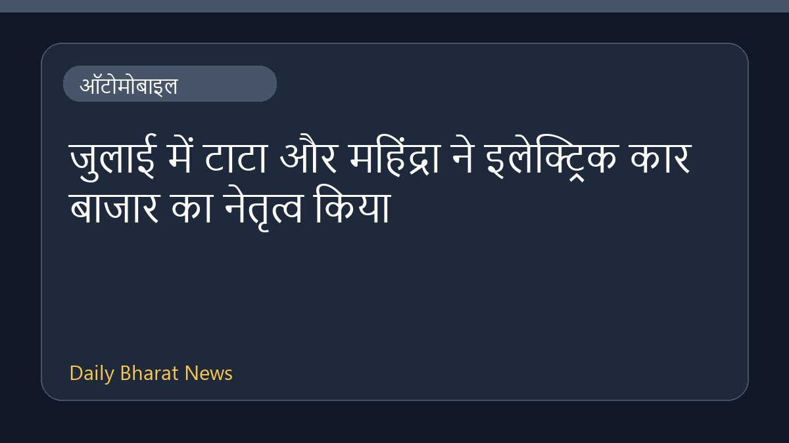

जुलाई में टाटा और महिंद्रा ने इलेक्ट्रिक कार बाजार का नेतृत्व किया

ऑटोमोबाइल समाचार स्रोतों के अनुसार, टाटा और महिंद्रा ने इलेक्ट्रिक कार बाजार में अग्रणी स्थिति हासिल करते हुए जुलाई महीने में तीन अंकों की वृद्धि दर्ज की है। दोनों प्रमुख वाहन निर्माताओं ने इस सेक्टर में मजबूत प्रदर्शन किया है, जिससे इलेक्ट्रिक वाहनों की मांग और उनकी बाजार हिस्सेदारी में उल्लेखनीय विस्तार देखा गया है। इस वृद्धि के संबंध में अधिक विस्तृत जानकारी उपलब्ध नहीं है, और प्राप्त डेटा के अनुसार इस क्षेत्र में सकारात्मक रुझान बना हुआ है।
मूल स्रोत: Automobile News Sources
Tata & Mahindra lead electric car market, post triple-digit growth in July - HT Auto ↗
Tata & Mahindra lead electric car market, post triple-digit growth in July - HT Auto ↗